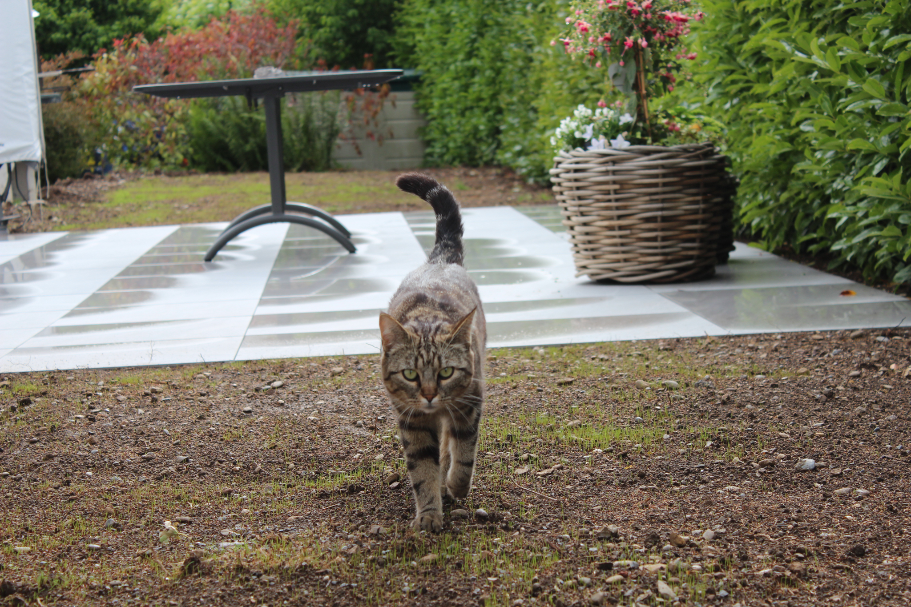

The live of my cat
Auf dieser kleinen Seite werde ich ein wenig über meine Katze schreiben und auch mit Bilder und Videos ihr leben verbildlichen.
Wieso überhaupt über meine Katze?
Meine Katze liegt mir sehr am Herzen und ist für mich mehr als nur ein Haustier. Meine Katze bringt mich immer zum lächeln mit ihrer Art. Jeden geniesse ich die Zeit mit ihr, bei dem ich ihre Zuneigung geniesse.
Auf diese Idee bin ich auch gekommen, da ich gerade bei Herr Obi ein Portfolio über meine Katze mache. So kann ich diese Bilder gerade sehr gut für diese Seite nutzen da wir ja mit Bilder arbeiten.
